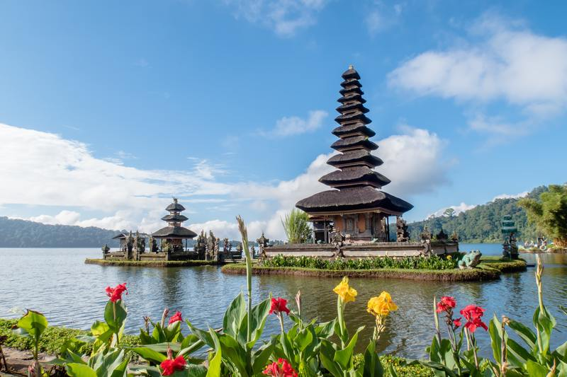

Aktivitas Seru yang Bisa Kamu Lakukan saat Liburan di Legian Bali
Legian Bali merupakan salah satu destinasi wisata populer di Pulau Bali yang nggak boleh kamu lewatkan. Area Legian Bali terkenal diantara para wisatawan lokal maupun internasional karena terletak diantara dua destinasi populer di Pulau Bali, yaitu Pantai Kuta dan kawasan pariwisata Seminyak. Berlokasi di kecamatan Kuta, Badung, wilayah ini juga terkenal dengan pilihan wisata pantainya yang indah.
Jika kamu berencana mengunjungi Legian Bali di tengah pandemi ini, kamu harus mengetahui aturan yang diterapkan oleh Pemerintah Provinsi Bali bagi Pelaku Perjalanan Dalam Negeri (PPDN). Sebelum memasuki Pulau Bali, kamu harus menunjukkan surat keterangan hasil negatif uji rapid/swab test bagi yang melakukan perjalanan dengan transportasi udara maupun darat. Setelah sampai di Pulau Bali, kamu juga harus menerapkan sejumlah aturan protokol kesehatan seperti memakai masker, membawa hand sanitizer, menjaga jarak dan menghindari kerumunan.
Buat kamu yang bingung nyusun itinerary untuk liburan ke Legian Bali, nih Alam Indonesia punya pilihan aktivitas seru yang bisa kamu lakukan di sana. Mulai dari menikmati kuliner sampai dengan uji adrenalin dengan menaiki wahana ekstrim. Jika kamu berencana berlibur ke Legian Bali di tengah pandemi, jangan lupa untuk menerapkan protokol kesehatan untuk liburan yang aman ya.
Mencicipi Berbagai Pilihan Kuliner di Jalan Raya LegianKalau di Jogja terkenal dengan Jalan Malioboro, Legian Bali terkenal dengan Jalan Raya Legian. Kawasan ini menjadi salah satu destinasi favorit para wisatawan karena dipenuhi oleh berbagai pilihan cafe, bar, dan juga street food. Seiring dengan pandemi yang belum berakhir ini, makan makanan yang enak merupakan cara untuk melepas sejenak rasa cemas yang ada. Selain tempat makan, kamu juga bisa menemukan banyak toko souvenir di kawasan ini.
Menikmati Live Music di Double Six BeachMelihat pemandangan indah sambil ditemani oleh sejuknya angin adalah hal umum yang akan kita nikmati kalau pergi ke pantai. Nah, gimana kalau ada live music ya? Pasti moment bersantai kamu sekaligus melepas penat bakal terasa lengkap banget! Buat kamu yang ingin merasakan pengalaman berbeda di pantai, wajib mengunjungi Double Six Beach di Legian Bali. Selain pemandangannya yang indah, pantai ini juga menawarkan persewaan payung, live music dan ada berbagai pilihan cafe juga yang bisa kamu nikmati.
Hunting Foto Unik di Dream Museum ZoneJaman sekarang, liburan tanpa foto-foto akan terasa kurang lengkap, betul nggak, RedTraveler? Kalau liburannya ke Bali, tentunya kamu nggak akan kehabisan spot foto cantik untuk feeds instagram kamu. Buat menambah koleksi foto kamu, coba berkunjung ke Dream Museum Zone deh! Terletak di Jalan Nakula, Legian, Bali, museum ini memiliki koleksi karya seni tiga dimensi yang akan membuat fotomu terlihat lebih hidup. Kamu akan melihat banyak gambar tiga dimensi mulai dari tema superhero, alam bawah laut sampai dinosaurus. Untuk mengunjungi tempat ini, kamu perlu mengeluarkan biaya tiket masuk sebesar Rp100.000,- per orang.
Shopping di Pasar Seni KutaSelain berfoto dan makan makanan enak, berbelanja merupakan hal yang bisa dilakukan sebagian orang untuk mengurangi stres di tengah pandemi. Well, kamu nggak usah khawatir karena kamu bisa berbelanja sampai puas di Pasar Seni Kuta, Legian Bali. Berlokasi hanya beberapa meter dari Pantai Kuta, kamu akan melihat deretan kios panjang yang menjual oleh-oleh khas Bali. Mulai dari pakaian, tas, pernak-pernik, lukisan, semuanya ada di sini. Harga yang dikenakan pun bervariasi tergantung dari hasil tawar menawar pada saat membeli.
Uji Adrenaline dengan Menaiki Wahana 5GX Reverse BungyBerlokasi di Jalan Legian, 5GX Reverse Bungy merupakan wahana ekstrim yang harus dicoba kalau kamu mau menguji adrenalin. Kamu akan duduk dan terkunci dengan safety belt di dalam sebuah wahana yang berbentuk seperti bola. Dengan kecepatan 200km/jam, kamu akan dilempar ke udara setinggi gedung 7 lantai, kemudian memantul dan berputar selama beberapa menit. Untuk menaiki wahana ini, kamu perlu mengeluarkan biaya sebesar Rp350.000,- per orang. Gimana? Kamu merasa tertantang naik wahana ini atau malah sebaliknya?